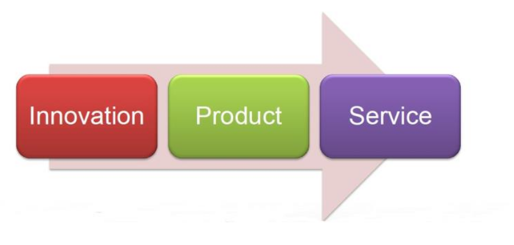
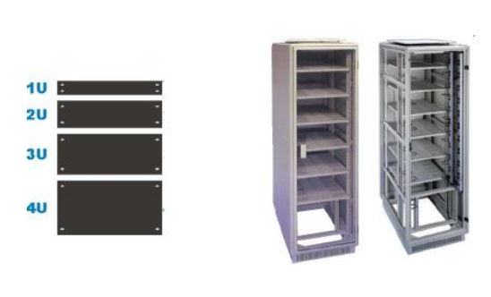
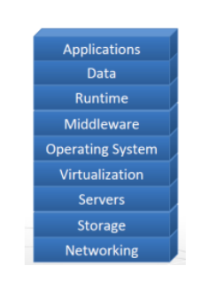
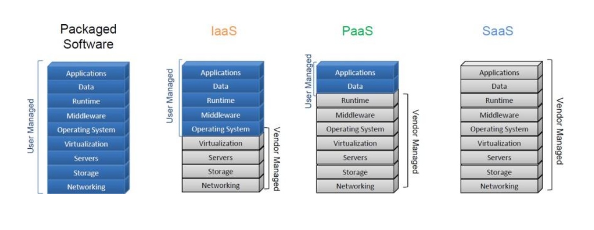

§ Clouds: Introduction to Cloud Technologies
The best way to look at the development of the cloud is to look at the lifecycle for major utilities throughout history. Take the case of water, initially, the people procured water themselves which was very intensive in terms of effort and time. However, models were developed to separate the process of procurement of water and its usage. Thus, the market moved towards some players procuring the water and delivering it to the populace who could use it. However, this also went ahead and developed into a system where water was delivered through pipelines and a user would be charged on a pro-rate basis, depending on their usage. The same thing happened with electricity. This trend can be generalized to the lifecycle shown in the figure below:

If we look at IT from the lens of this cycle, then the innovation phase would be the phase where new kinds of products and services were introduced into the market, the product phase would be when companies maintained these on a growing user base, and the service phase would be when companies started addressing the growing demand and user-base by trying to achieve economies of scale through the cloud.
§ Defining Cloud Computing
Cloud Computing can be defined in the following three ways:
- It is the delivery of computing as a service rather than a product
- It is a method to offer shared resources, software, and information to computers and other devices
- It is a metered service over the network
§ IT as a Service
There are 3 primary ways in which IT as a service can be offered:
- Software-as-a-Service (SaaS) : These are applications running on a browser
- Platform-as-a-Service (Paas) : These are software platforms made available to developers through APIs, to build applications
- Infrastructure-as-a-Service (Iaas) : These are basic computing resources like CPU, Memory, Disk, etc. made available to users in the form of Virtual Machine Instances
Some other models that are also possible are
Hardware-as-a-Service (Haas) where users can get access to barebones hardware machines, do whatever they want with them (E.g clusters), and
X-as-a-service (Xaas) which might extend to Backend, Desktop, etc.
§ Cloud Infrastructure
Servers are computers that provide to user machines - the client - and the main idea behind these is that they can be designed for reliability and to service a high number of requests. Dual socket servers are the fundamental building blocks of cloud infrastructure. Organizations usually require many physical servers, like a web server or database server, to provide various services. These servers are grouped, organized, and placed into racks. For standardization, 1 Rack Unit (RU) is defined as 4.45 cm.

A data center is a facility that is used to house a large number of servers. It needs to provide Air-Conditioning to cool the servers, Power supply to all the servers and needs to implement monitoring, network, and security mechanisms for these servers. Now the companies all have the option of privately owned data centers, but these are certain problems associated with this:
- These are expensive to set-up with a high CAPEX for real-estate, servers, and peripherals
- They have high OPEX in energy and administration costs
- It is difficult to grow or shrink applications. If the company initially budgets a small number of servers, and then there a demand surge, sometimes even overnight for companies like FaceApp, they would have to expand the area abruptly, which is very difficult. Now, let us say they are able to expand the area and resource pool, they would not be able to shrink these if they demand tapers off. These things are simply not possible for smaller companies, as much as they are for bigger companies like Dropbox
- Servers can also suffer from the problem of low utilization. This can be caused by uneven usage of applications, where one application might be exhausting one resource while leaving the others stranded-off. Another reason for this is sudden demand spikes, which taper off even more suddenly
Thus, the idea behind cloud infrastructure is to alleviate this problem by separating the server infrastructure from the end-users. The servers can be grouped into a large resource pool and then access can be given to applications based on their demand and the pricing can be set-up based on the usage of this resource pool. Hence, the applications don't need to worry about the usage statistics as far as to look into load balancing. Moreover, the sudden demand spikes and shrinks can be easily adjusted by changing the user requests. However, to offer such a service two requirements need to be met:
- Means for rapidly and dynamically satisfying application's fluctuating resource need. This is provided by Virtualization
- Means for servers to Quickly and reliable access shared and persistent data. This is done by programming models and distributed file/storage/database systems
This resource pool can also be defined based on its location:
- Single-Site Cloud : This would be the collection of hardware and software that the vendors use to offer computing resources and services to users.
- Geographically Distributed Cloud : This is a resource pool that is spread across multiple locations and has a composition of different structures and services
§ Cloud Hardware and Software stack
The full stack for clouds has 9 components, as shown in the figure below:

- Applcations : These are applications like Web-apps or Scientific Coputation Jobs etc.
- Data : These are the database systems like Old SQL (Oracle, SQLServer), No SQL (MongoDB, Cassandra), and New SQL (TimesTen, Impala, Hekaton) systems
- Runtime Environment : These are runtime platforms like Hadoop, Spark, etc. to support cloud programming models.
- Middleware : These are platforms for Resource Management, Monitoring, Provisioning, Identity Management, and Security.
- Operating Systems : These are operating systems like Linux used on a personal machine, but they can also be packed with libraries and software for quick deployment. For example, Amazon Machine Images (AMI) contain OS as well as required software packages as a “snapshot” for instant deployment
- Virtualization : This layer is the key enabler of the cloud services. It creates a mapping between the lower hardware layers and the upper applications and OS layers and contributes towards multi latency. For example, the Amazon EC2 is based on the Xen virtualization platform, and Microsoft Azure is based on HyperV
The stuff below virtualization has already been discussed. However, one thing that can now b understood is how does this stack help in differentiating between the offered services. As shown in the figure below, in the case of Saas the user has only access to the applications offered by the cloud. In the case of Paas, the user manages the application and Data layer of the stack. In the case of Iaas, the user has access to all the layers above the virtualization layer, so that they can build their own application on the offered resources.

§ Types of Cloud
There are three basic types of clouds:
- Public (external) Cloud : This is a resource pool that serves as an open market for on-demand computing and IT resources. However, the availability, reliability, security, trust, and SLAs can have limitations.
- Private (Internal) Cloud : This is the same set of services of cloud, but devoted to the functions of a large enterprise with the budget of large-scale IT
- Hybrid Cloud : This is the best of both worlds. The private cloud is extended by connecting it to other public cloud vendors to make use of their available cloud services. So, a company can use their private cloud, and when the resources surge they can also extend usage to the public cloud, of course paying pro-rata
§ Applications Enabled by the Cloud
The applications that can be enabled by the cloud are of 4 types
- High-Growth Applications : This the same case as FaceAPP that was discussed previously. Imagine a startup that is growing. They would need a dynamic resource usage mechanism, that as discussed previously, is comfortably offered by the cloud. The risk of not setting up a distributed resource management method is losing on customer experience. This was the case with Friendster(2001), that had a similar offering as Facebook but could not keep up with the user growth.
- Aperiodic Applications : These are applications that face sudden demand peaks and need a way to handle this. The cloud enables them comfortably, and again the risk is user experience. For example, Flipkart offered the 'Big-Billion Day' sale in a similar manner to Amazon's Prime Day, but initially, they could not handle the load and the customer experience was ruined. However, they did fix it over time
- On-off Applications : These are one-off applications that for which extending private resources makes no sense. for example, scientific simulations requiring 1000s of computers
- Periodic Applications : These are applications that will have a periodic demand surge, like stock market analysis tools or HFT tools, and thus, dynamic, flexible infrastructure can reduce costs, improve performance
§ Advantages Offered by Cloud Computing
- Pay-as-you-go economic model
- Simplified IT Management
- Quick adn Effortless scalability
- Flexible options
- Improved Resource Utilization
- Decrease in Carbon Footpriint